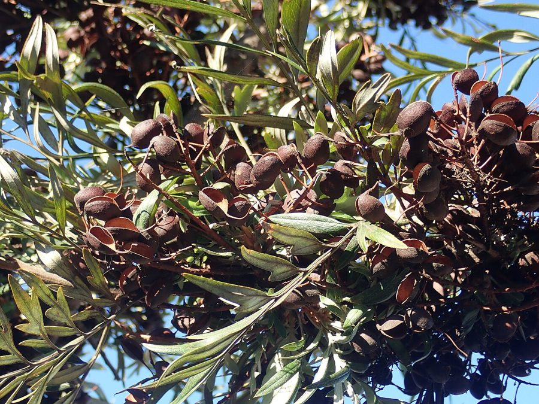

सिल्वर ओकSilver Oak
Grevillea robusta · Proteaceae · FLR-0300

- Scientific name वैज्ञानिक नाम
- Grevillea robusta A.Cunn. ex R.Br.
- Family कुल
- Proteaceae
- Hindi हिंदी
- सिल्वर ओक
- Local names स्थानीय नाम
- silver oak, silveroak, silky oak, grevillea
- Status here यहाँ की स्थिति
- cultivated
- Movement आवागमन
- Resident, here all year
- Known from कहाँ दर्ज
- Others have published records from the wider Awadh–Purvanchal plain, none yet from Basti–Ayodhya अवध–पूर्वांचल से दूसरों के प्रकाशित अभिलेख, बस्ती–अयोध्या से अभी नहीं
- IUCN IUCN
- not evaluated
- Review समीक्षा
- audited and independently read
When to look कब देखें
Present all year. साल भर मौजूद।
Uses and possibilities उपयोग और संभावनाएँ
Drawn from the documented uses in the profile below, where each is labelled traditional, current or a research lead. All uses →
Tell it apart from इनसे अलग पहचानें
सिल्वर ओक / Silver Oak
Grevillea robusta A.Cunn. ex R.Br. — Proteaceae
सिल्वर ओक — एक लंबा, सुंदर, अर्ध-सदाबहार पेड़ जो ऑस्ट्रेलिया से लाया गया है और अब भारत के हर हिस्से में बाग़ों, सड़कों के किनारे और हवा रोधक पेटियों में लगाया जाता है। पत्तियाँ बहुत सँकरी, पंख जैसी, चाँदी जैसी चमकदार, जो इसका नाम बताती हैं। फूल अद्भुत नारंगी-लाल, कुर्लीदार, सीधी बालों जैसे, जनवरी से मार्च तक खिलते हैं। लकड़ी हल्की, नरम, लेकिन अच्छी गुणवत्ता की होती है।
Quick Identification त्वरित पहचान
| Feature | Description |
|---|---|
| Size | Tall, evergreen to semi-deciduous tree, 15–25 m tall, narrow crown |
| Leaves | Bipinnate, feathery, 15–30 cm long, silvery-green (hence "silver" oak) |
| Leaflets | Fine, linear, giving a fern-like appearance |
| Flowers | Orange-red, curved, one-sided racemes (bottle-brush appearance), December–March |
| Fruit | Woody follicles, 2–3 cm, containing one winged seed |
| Bark | Dark greyish-brown, becoming rough and fissured with age |
| The test | Feathery silvery leaves and curved orange-red flowers identify it distinctly |
Field tip: Tall tree with fine, feathery, silvery-grey bipinnate leaves (resembling a fern frond or feather) and brilliant orange-red, curved, one-sided flower clusters. Very common in urban plantations, gardens, and roadsides.
हिंदी — कैसे पहचानें: बहुत लंबा, सँकरा पेड़। पत्तियाँ चाँदी जैसी चमकदार, पंख जैसी, नरम। फूल नारंगी-लाल, कुर्लीदार। शहरों में हर जगह।
Morphology आकारिकी
Biometrics (cultivated trees, Indian plains):
| Measurement | Range |
|---|---|
| Height | 15–25 m |
| Trunk diameter | 40–80 cm |
| Leaf length | 15–30 cm |
| Leaflet length | 8–12 mm |
| Flower raceme length | 8–10 cm |
Trunk and bark: Tall and straight, with dark greyish-brown bark becoming rough and fissured with age. Heartwood light honey-coloured, moderately hard.
Leaves: Alternate, bipinnate, 15–30 cm long. Primary pinnae 12–16 pairs. Leaflets linear, 8–12 mm long, numerous, giving a fern-like, feathery appearance. Upper surface silvery-green with fine hairs; lower surface paler. Petiole 1–2 cm.
Flowers: Orange-red to bright red, arranged in one-sided (secund) racemes 8–10 cm long. Each flower curved, perianth of 4 segments. Flowers appear December to March, especially on terminal branches.
Fruit: Woody, leathery follicles, 2–3 cm long, containing a single flattened, winged seed for wind dispersal.
हिंदी: पत्तियाँ दो-पंखदार, सँकरी, चाँदी जैसी। फूल नारंगी-लाल, एक ओर को मुड़े। फल लकड़ी के, एक बीज वाले।
Behaviour & Ecology व्यवहार और पारिस्थितिकी
Silver Oak is an introduced tree from eastern Australia, widely cultivated in Indian gardens, parks, and plantations. It is semi-deciduous but retains leaves year-round in adequate moisture. The tree grows rapidly and is nitrogen-fixing (like other Proteaceae), which enriches soil. The brilliant orange-red flowers attract bees and sunbirds. The tree tolerates a range of soil and climate conditions and is drought-hardy once established. It is commonly used as a shade tree and windbreak in agricultural areas.
हिंदी: ऑस्ट्रेलिया से भारत में लाया गया। बहुत तेजी से बढ़ता है। हवा और धूप दोनों सहन करता है। खेतों में हवा रोधक पट्टी के रूप में लगाया जाता है।
Life Cycle / Phenology जीवन चक्र
| Month / season | Event |
|---|---|
| December–March | Flowering with orange-red racemes |
| April–June | Fruit development during monsoon |
| July–September | Vigorous vegetative growth |
| October–November | Fruit maturation; seed dispersal begins |
| 4–6 years from seed | First flowering |
Seedlings germinate readily from winged seeds. Growth is very rapid; trees can reach 5–6 m in a single season under good conditions. Lifespan reaches 50–70 years or more.
हिंदी: दिसंबर से मार्च तक फूल। अप्रैल-जून में फल। तेजी से बढ़ता है।
Associated Species / Interactions संबंधित प्रजातियाँ
- Pollinator visitors: Asian Honey Bee, sunbirds, and other birds on flowers.
- Soil: Its leaf litter adds organic matter; like other Proteaceae it has dense cluster roots that take up phosphorus. It does not fix nitrogen.
Pests and Diseases कीट और रोग
- Leaf-eating insects; rarely cause serious damage.
- Scale insects may infest the tree.
- No significant fungal diseases in the Indian climate.
Agricultural / Human Relevance कृषि प्रासंगिकता
Uses:
- Timber. Light honey-coloured wood is used for light construction, boxes, packing cases, and match splints. Not durable outdoors but suitable for interior work.
- Fuel. Used as firewood and for charcoal production locally.
- Shade and windbreak. Extensively planted along roadsides, canals, and agricultural field boundaries as a shade tree and windbreak.
- Ornamental. The feathery foliage and brilliant flowers make it a popular garden and park tree.
- Soil and shade. It is planted as a shade tree in agroforestry for its light canopy. Proteaceae do not fix nitrogen.
Today. One of the most planted trees in Indian cities and towns. Increasingly valued in agroforestry and sustainable agriculture.
Research direction (a lead, not a result). The extent to which nitrogen fixed by Grevillea enriches adjacent agricultural soils would merit investigation. Comparative growth rates under different moisture and soil regimes would inform planting recommendations.
हिंदी: लकड़ी हल्की और अच्छी होती है। ईंधन के लिए काम आती है। बाग़ों और सड़कों के किनारे लगाई जाती है। खेतों में हवा को रोकता है।
Expected Locally स्थानीय रूप से अपेक्षित
Not a field record. Written from published accounts for eastern Uttar Pradesh. No confirmed local sighting yet — if you have seen it, that is what the atlas needs.
अभी तक स्थानीय पुष्टि नहीं। यह विवरण प्रकाशित स्रोतों से है, किसी अवलोकन से नहीं।
GBIF holds published records from the wider Awadh–Purvanchal plain. Silver Oak is found in cities, towns, villages, gardens, and roadsides throughout eastern Uttar Pradesh as a planted tree. It has naturalized in some areas.
Distribution वितरण
Global range: Native to eastern Australia (Queensland and northern New South Wales). Widely cultivated in tropical and subtropical regions worldwide.
In India: Common in all regions, particularly in gardens, parks, and plantations from the plains up to about 2,000 m elevation.
In Uttar Pradesh: Very common in cities, towns, and villages; extensively planted on roadsides and in agricultural shelterbelts.
In Basti district / eastern UP: Frequent in towns and villages; increasingly planted in agricultural areas.
Research Questions शोध प्रश्न
- How many Silver Oak trees are planted in your town or village, and what is their age? — Walk streets and canals; map trees and estimate age.
- How much wood does a single tree yield, and what is the timber quality? — Fell a mature tree (with permission); measure and assess timber.
- How much nitrogen does a Grevillea windbreak contribute to adjacent agricultural fields? — Soil sampling and analysis; compare fields with and without windbreaks.
- Which birds and insects visit the flowers, and what is the pollinator spectrum? — Thirty-minute observations at flowering trees December–March.
- How far do Grevillea seeds disperse from parent trees? — Mark trees; collect and monitor seedling establishment over seasons.
Similar Species मिलती-जुलती प्रजातियाँ
| Species | How to tell apart | हिंदी |
|---|---|---|
| Neem (Azadirachta indica) | Pinnate leaves (not bipinnate); small white flowers; bitter smell | पंखदार पत्तियाँ; सफ़ेद छोटे फूल; कड़वी गंध |
| gulmohar (Delonix regia) | Larger, more delicate bipinnate leaves; large red flowers with yellow edge | बहुत सँकरी पत्तियाँ; बड़े लाल फूल |
Field rule: A tall tree with silvery-green, feathery bipinnate leaves and curved orange-red one-sided flower clusters is Silver Oak.
Taxonomy & Classification वर्गीकरण
Original description. Originally described by A. Cunningham and R. Brown in 1830 based on Australian specimens. Type locality is eastern Australia (Queensland).
Subspecies. Monotypic — no subspecies are currently recognised.
Family and order placement. Order Proteales, family Proteaceae (the protea family). The genus Grevillea contains about 350 species, mostly Australian, known for ornamental and timber value.
Phylogenetic notes. Grevillea robusta belongs to a clade of Proteaceae species characterised by one-sided (secund) inflorescences and nitrogen-fixing root nodules.
IUCN status rationale. Not evaluated. Widespread in cultivation; not threatened in native habitat.
Photo Gallery फोटो गैलरी
No photos yet — add field photos to media/species/silver_oak/ and run node scripts/sync_photos.js.
Wanted photos:
- Tall tree in urban or roadside setting
- Feathery silvery-green bipinnate leaves
- Orange-red curved flower racemes
- Flowers in close-up
- Winged fruits
- Tree in full bloom (December–March)
References संदर्भ
- Cunningham, A. & Brown, R. (1830). Botanical Description in Narrative of an Expedition into the Interior of Eastern Australia. London.
- Maiden, J.H. (1889). The Useful Native Plants of Australia. Turner & Henderson, Sydney.
- Bor, N.L. (1961). The Grasses of Burma, Ceylon, India and Pakistan. Pergamon Press, London.
- Sahni, K.C. (1998). The Book of Indian Trees. Oxford University Press, New Delhi.
- GBIF Occurrence Data — Grevillea robusta, India.
- Proteaceae Resources: International Protea Research Symposium proceedings.
Source file: species/flora/trees/silver_oak.md